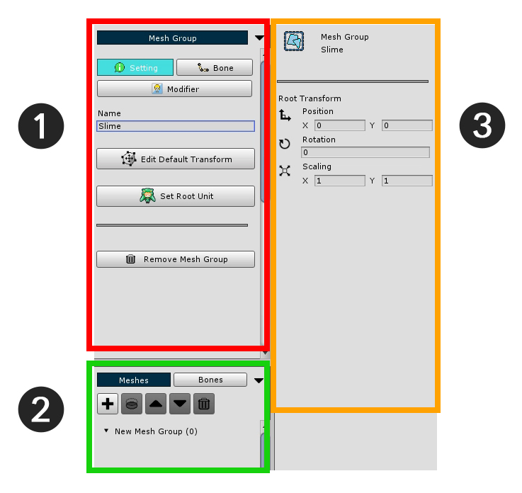
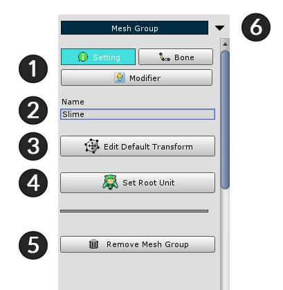
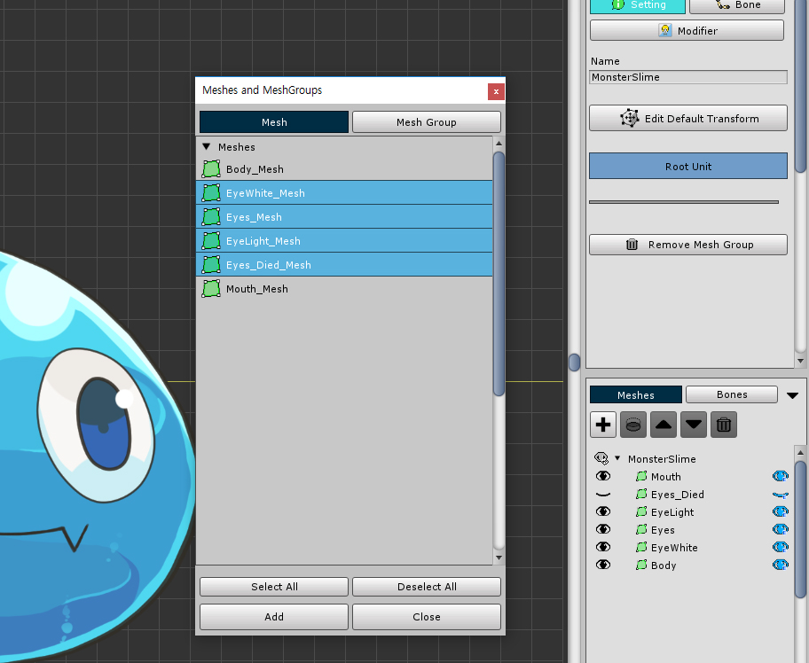
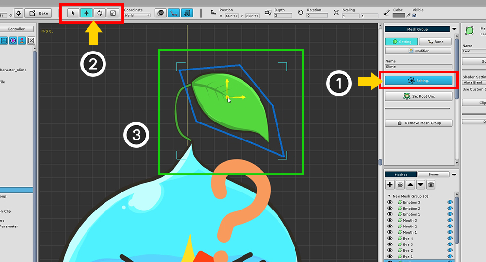
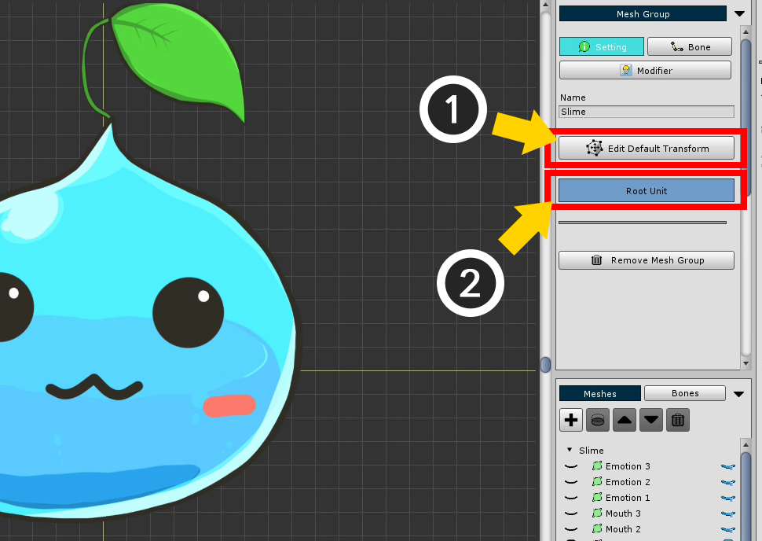
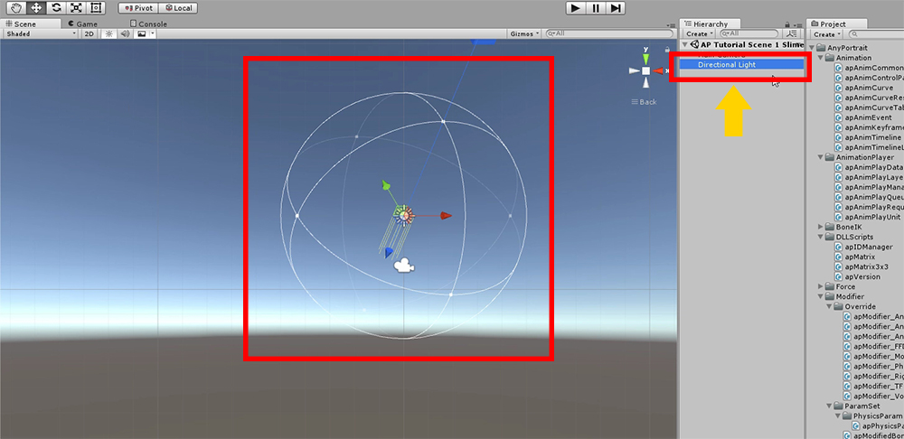
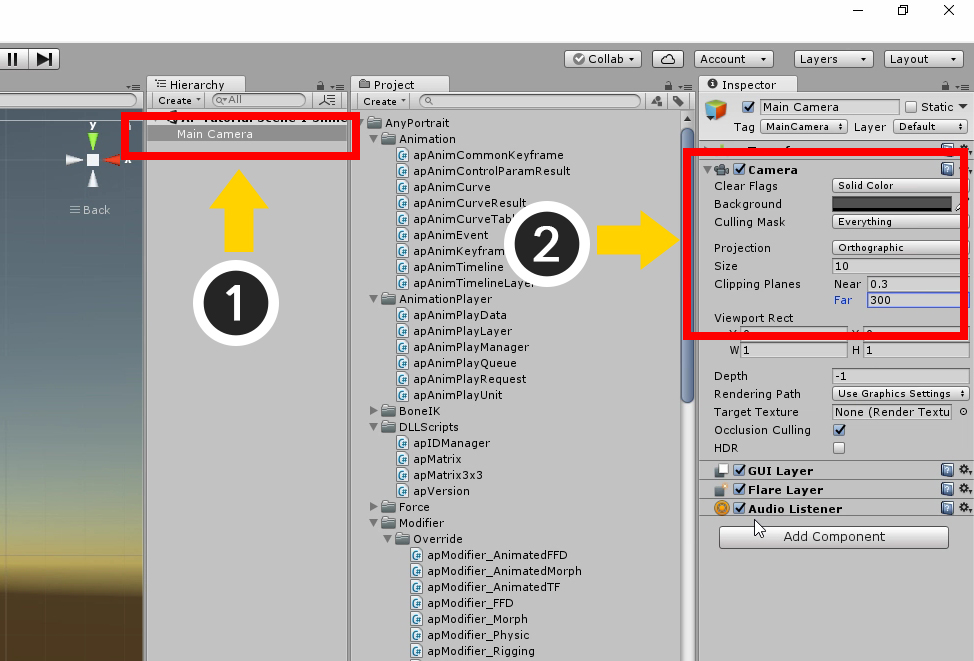
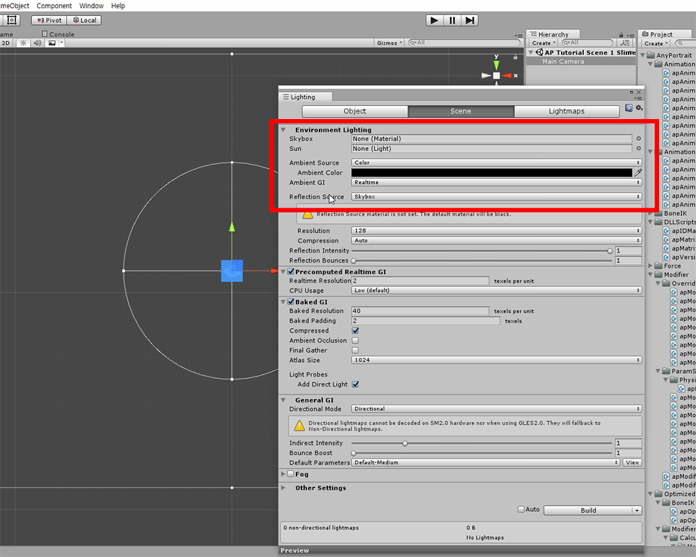

AnyPortrait > 入門ガイド > 1.4. メッシュグループの作成
1.4. メッシュグループの作成
1.1.7
AnyPortraitのさまざまな要素の中で最も中心的なものが「メッシュグループ(Mesh Group)」です。
名前を見ると、「メッシュは一緒です」と見るのは簡単ですが、メッシュグループにさまざまな機能を追加するとさまざまな効果が得られます。
この場合、追加された関数は「モディファイア(Modifier)」と呼ばれます。
メッシュグループに追加するモディファイアに応じて、ボーンアニメーションを追加したり、モーフィングアニメーションを追加することができます。
このセクションでは、メッシュグループを作成してモディファイアを追加する前の手順について説明します。

階層UIで、(1) 「メッシュグループの追加」ボタンをクリックし、作成されたメッシュグループを選択します。
メッシュグループを選択すると、右の画面に 「Setting」、「Bone」、「Modifier」メニューが表示されます。
設定メニューが選択された状態で、(2) メッシュグループ（Slime）の名前を書き留めます。

メッシュグループ詳細画面は、3つの領域に分かれています。
1. メインメニュー : 「Setting」、「Bone」、「Modifier」メニューがあります。 各メニューのデフォルト設定またはサブメニューを表示します。
2. サブメッシュ/メッシュグループ階層、ボーン階層 : メッシュグループのメッシュ、メッシュグループ、またはボーンを表示します。
3. オブジェクト情報 : 「メッシュ」、「モディファイア」、「ボーン」などの選択されたオブジェクトの情報が表示されます。
今度は、メッシュグループの基本的な作業を行う必要があります。

1. メニュータブ : 「Setting」、「Bone」、「Modifier」メニューがあります。
2. Name : 名前を編集できます。
3. Edit Default Transform : この機能が有効な間にメッシュを移動できます。 これは、メッシュの「デフォルト位置」を指定する関数です。
4. Set Root Unit : ボタンを押すと、現在のメッシュグループがルートユニットとして登録されます。 ルートユニットとして登録されたメッシュグループのみがシーンに移動されます。
5. Remove Mesh Group : このメッシュグループを削除します。
6. メニューを折り畳む : 折り畳みゾーンを最小限に抑えます。

メッシュをメッシュグループに追加します。
(1) 「+」ボタンを押してダイアログを開き追加するターゲットを選択します。
このダイアログでは、メッシュを選択するか、別のメッシュグループを選択してメッシュを追加できます。
(2) 「Mesh」タブをクリックします。
(3) メッシュを選択し、(4) 「Add」ボタンをクリックしてメッシュを追加します。

上記のように1つのメッシュが追加されました。
すべてのメッシュに対して上記の手順を繰り返します。

v1.1.7から、複数のメッシュ、メッシュグループを選択して、一度に追加することが可能になりました。
Ctrl キーまたは Shift キーを押しながら複数のメッシュとメッシュグループを選択します。
「Select All / Deselect All」ボタンを押して、すべてオンまたはオフにすることができます。

すべてのメッシュを追加すると、上のようになります。
すべての位置が原点で集められているので、形はきれいではありません。
さらに、一度にレンダリングされるため、すべての目と口の形を区別することは困難です。
各メッシュのデフォルトの位置を変更し、デフォルトとして可視性を設定する必要があります。

(1) 「Edit Default Transform」ボタンを押します。 ボタンを押すと、ボタンが青色に変わり、アクティブになります。
この状態では、メッシュとメッシュグループを移動してデフォルトシェイプを取得できます。
(2) 「選択」、「移動」、「回転」、「スケール」ツール（ショートカットキー Q、W、E、R ）を使用して、
(3) メッシュを適切な位置に配置し。

登録メッシュのレンダリング順序を変更する必要がある場合、または削除する必要がある場合は、サブメッシュ階層のトップメニューを使用できます。
1. 下位レイヤーへのクリッピング : 選択したレイヤーの下位レイヤーをクリッピングマスクとして使用します。
2. レンダリング順序増減 : レンダリング順序を変更します。 レンダリングの順序は、上のメッシュの前にレンダリングされます。
3. 選択したオブジェクトを削除 : 追加したメッシュまたはメッシュグループを削除します。

作業中は、メッシュが重なり合って見えなくなることがあります。
サブメッシュ階層の各アイテムには、各アイテムの左右に目のアイコンがあります。
各オブジェクトを表示または非表示にする関数です。
しかし、違いがあります。
「左の目の形のボタン」は、タスクの「一時の可視性」を決定します。 実際に格納されている値ではありません。
「右の目の形のボタン」は「保存された可視性」です。
「Default Edit Transform」を使用して作業している現在の状態では、「修飾子がない場合の最初の可視性」が決定されます。
< メッシュの一時の可視性 >
作業のための「メッシュの一時の可視性」に関連したヒントです。

(1) リストの上部のボタンを押すと、「一時の可視性」がすべてリセットされます。
(2) Ctrl を押して目の形のアイコンをクリックすると、残りのすべてのメッシュが選択されたメッシュの可視性と逆に設定されます。
(3) エディタの設定に応じて作業が進行中「一時の可視性」が自動的にリセットされないようにすることができます。 （関連ページ）

メッシュのデフォルト位置とデフォルトの可視性の両方を設定している場合は、
(1) 「Edit Default Transform」モードをオフにします。
このスライムを (2) Root Unitとしてシーンに移動します。

ルート単位として設定すると、左側のUIに「Root Unit 0」が追加されていることがわかります。
(1) 「Root Unit 0」を選択し、作業しているメッシュグループがレンダリングされているかどうかを確認します。
(2) 「Bake」ボタンを押すと、シーンにエクスポートするダイアログが開きます。
(3) ダイアログ上の 「Bake」ボタンを押しエディタを終了します。
参考 :
「Bake」はすべてのルートユニットをシーンにエクスポートします。
「Root Unit 0」が最初に表示され、残りは隠されています。
スクリプトやアニメーションを使用して別のルートユニットに置き換えることができます。

シーンにスライムが適用されているのを見ることができます。
ゲームを実行すると、「既定で指定された可視性」が機能することがわかります。
AnyPortraitのシーンを設定
キャラクターをシーンにエキスポートすると、正しく表示されないことがあります。または、明るくまたは暗くなることがあります。
キャラクターとマテリアルのシーンを設定する必要があります。

最初に、シーンを作成するときに自動的に追加されるDirectional Lightを削除します。

(1) 「Main Camera」を選択します。
(2) カメラの設定を次のように変更します。
- 「Clear Flags」を「Solid Color」に設定します。
- 「Projection」を「Orthographic」タイプに変更します。
- 「Size」を変更します。 通常、AnyPortraitが作成した出力には値10を指定することをお勧めします。
- 「Clipping Planes」を設定します。 NearとFarの距離は500以内にすることをお勧めします。

トップメニューの「Window > Lighting」をクリックして、ライトの設定を開きます。
この設定を次のように変更します。
- Skyboxを無効にする。
- Ambient SourceをColorに変更します。
- Ambient Colorを黒(0, 0, 0)に変更します。
「AnyPortrait v1.4.7」からは、基本マテリアルが修正され、ライト除去作業をする必要はありません。 （関連ページ）